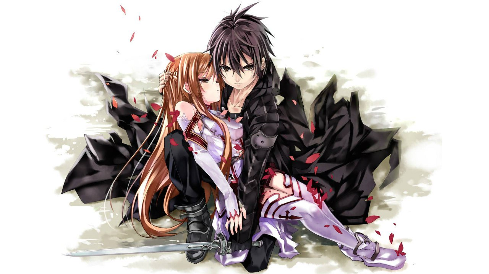
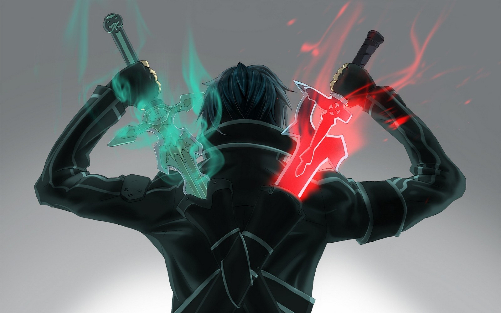
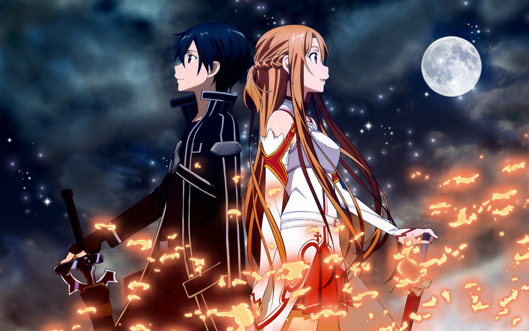
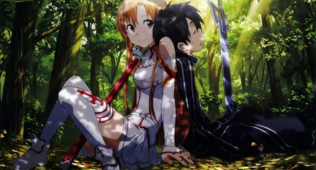

Sword Art Online (яп. ソードアート・オンライン Со:до А:то Онрайн) — серия ранобэ японского писателя Рэки Кавахары с иллюстрациями художника, выступающего под псевдонимом abec. На основе романов выпускается манга, аниме адаптаций, адаптация в формате Drama CD, а также компьютерные игры. В 2015 году Истари Комикс приобрели лицензию на публикацию ранобэ, и в этом же году на канале 2x2 состоялся показ аниме-адаптации под названием «Мастера Меча Онлайн».
Недалёкое будущее. К 2022 году технологии достигли такого уровня, что сделали возможным Полное Погружение — блокировку информации, поступающей к мозгу от всех пяти органов чувств, перехват сигналов, идущих от мозга к телу и замена этих сигналов «фальшивыми» — сгенерированными компьютером. Полное Погружение было в первую очередь использовано в индустрии компьютерных игр, поскольку позволяло полностью переключить сознание игрока на виртуальный игровой мир.
   